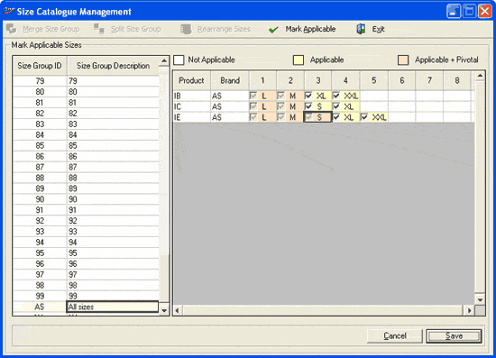

The Size Catalogue Management window is as shown.

Select the size group to be modified from the list. The corresponding Product-Brand combination and the currently applied size codes are displayed on the right hand side. Choose the relevant size codes for each Product-Brand combination. Colour change (Not Applicable, Applicable and Applicable + Pivotal) indicates the status of each size code.